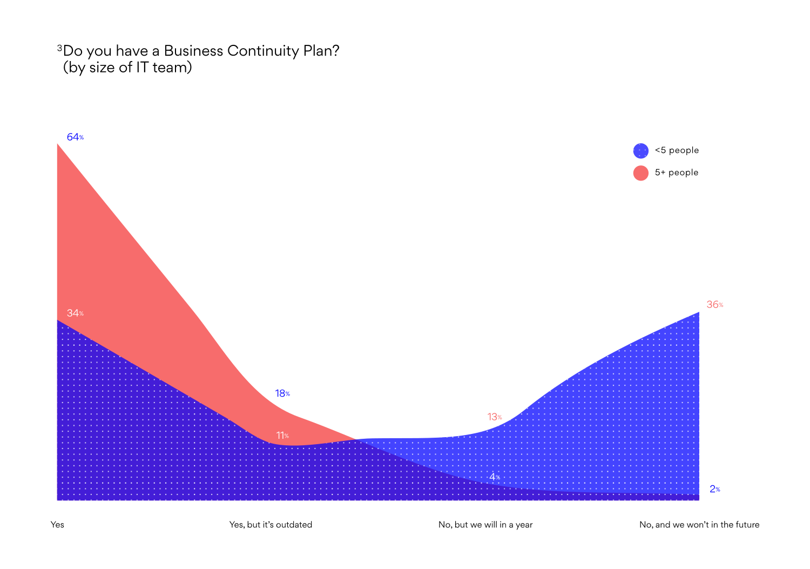

Business Continuity Planning
Hardware failure and human error remain the top two causes of data loss, as they have done since the first edition of the Data Health Check in 2008.
It should be noted, the 2016 figure for hardware failure appears to be an anomaly, with figures from 2013 & 2014 showing consistency around 21%.

The proportion of continuity planning among respondents (and the relative maturity of the plans themselves) was very similar to 2016.

Perhaps unsurprisingly, the size of the internal IT team had a significant impact on whether the organisation in question had a Business Continuity Plan.
49% of respondents from from organisations with fewer than 5 people in the IT department didn’t have a business continuity plan.
